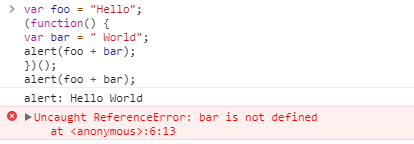

面试问题
常见问题：
- 你在昨天/本周学到了什么？
- 编写代码的哪些方面能够使你兴奋或感兴趣？
- 你最近遇到过什么技术挑战？你是如何解决的？
- 在制作一个网页应用或网站的过程中，你是如何考虑其 UI、安全性、高性能、SEO、可维护性以及技术因素的？
- 请谈谈你喜欢的开发环境。
- 你最熟悉哪一套版本控制系统？
- 你能描述当你制作一个网页的工作流程吗？
- 假若你有 5 个不同的样式文件 (stylesheets), 整合进网站的最好方式是?
- 你能描述渐进增强 (progressive enhancement) 和优雅降级 (graceful degradation) 之间的不同吗?
- 你如何对网站的文件和资源进行优化？
- 浏览器同一时间可以从一个域名下载多少资源？
- 有什么例外吗？
- 请说出三种减少页面加载时间的方法。(加载时间指感知的时间或者实际加载时间)
- 如果你参与到一个项目中，发现他们使用 Tab 来缩进代码，但是你喜欢空格，你会怎么做？
- 请写一个简单的幻灯效果页面。
- 如果今年你打算熟练掌握一项新技术，那会是什么？
- 请谈谈你对网页标准和标准制定机构重要性的理解。
- 什么是 FOUC (无样式内容闪烁)？你如何来避免 FOUC？
- 请解释什么是 ARIA 和屏幕阅读器 (screenreaders)，以及如何使网站实现无障碍访问 (accessible)。
- 请解释 CSS 动画和 JavaScript 动画的优缺点。
- 什么是跨域资源共享 (CORS)？它用于解决什么问题？
HTML 相关问题：
- doctype(文档类型) 的作用是什么？
- 浏览器标准模式 (standards mode) 、几乎标准模式（almost standards mode）和怪异模式 (quirks mode) 之间的区别是什么？
- HTML 和 XHTML 有什么区别？
- 如果页面使用 'application/xhtml+xml' 会有什么问题吗？
- 如果网页内容需要支持多语言，你会怎么做？
- 在设计和开发多语言网站时，有哪些问题你必须要考虑？
- 使用 data- 属性的好处是什么？
- 如果把 HTML5 看作做一个开放平台，那它的构建模块有哪些？
- 请描述 cookies、sessionStorage 和 localStorage 的区别。
- 请解释 <script>、<script async> 和 <script defer> 的区别。
- 为什么通常推荐将 CSS <link> 放置在 <head></head> 之间，而将 JS <script> 放置在 </body> 之前？你知道有哪些例外吗？
- 什么是渐进式渲染 (progressive rendering)？
- 你用过哪些不同的 HTML 模板语言？
CSS 相关问题：
- CSS 中类 (classes) 和 ID 的区别。
- 请问 "resetting" 和 "normalizing" CSS 之间的区别？你会如何选择，为什么？
- 请解释浮动 (Floats) 及其工作原理。
- 描述z-index和叠加上下文是如何形成的。
- 请描述 BFC(Block Formatting Context) 及其如何工作。
- 列举不同的清除浮动的技巧，并指出它们各自适用的使用场景。
- 请解释 CSS sprites，以及你要如何在页面或网站中实现它。
- 你最喜欢的图片替换方法是什么，你如何选择使用。
- 你会如何解决特定浏览器的样式问题？
- 如何为有功能限制的浏览器提供网页？
- 你会使用哪些技术和处理方法？
- 有哪些的隐藏内容的方法 (如果同时还要保证屏幕阅读器可用呢)？
- 你用过栅格系统 (grid system) 吗？如果使用过，你最喜欢哪种？
- 你用过媒体查询，或针对移动端的布局/CSS 吗？
- 你熟悉 SVG 样式的书写吗？
- 如何优化网页的打印样式？
- 在书写高效 CSS 时会有哪些问题需要考虑？
- 使用 CSS 预处理器的优缺点有哪些？
- 请描述你曾经使用过的 CSS 预处理器的优缺点。
- 如果设计中使用了非标准的字体，你该如何去实现？
- 请解释浏览器是如何判断元素是否匹配某个 CSS 选择器？
- 请描述伪元素 (pseudo-elements) 及其用途。
- 请解释你对盒模型的理解，以及如何在 CSS 中告诉浏览器使用不同的盒模型来渲染你的布局。
- 请解释 * { box-sizing: border-box; } 的作用, 并且说明使用它有什么好处？
- 请罗列出你所知道的 display 属性的全部值
- 请解释 inline 和 inline-block 的区别？
- 请解释 relative、fixed、absolute 和 static 元素的区别
- CSS 中字母 'C' 的意思是叠层 (Cascading)。请问在确定样式的过程中优先级是如何决定的 (请举例)？如何有效使用此系统？
- 你在开发或生产环境中使用过哪些 CSS 框架？你觉得应该如何改善他们？
- 请问你有尝试过 CSS Flexbox 或者 Grid 标准规格吗？
- 为什么响应式设计 (responsive design) 和自适应设计 (adaptive design) 不同？
- 你有兼容 retina 屏幕的经历吗？如果有，在什么地方使用了何种技术？
- 请问为何要使用 translate() 而非 absolute positioning，或反之的理由？为什么？
JS 相关问题：
- 请解释事件代理 (event delegation)。
- 请解释 JavaScript 中 this 是如何工作的。
- 请解释原型继承 (prototypal inheritance) 的原理。
- 你怎么看 AMD vs. CommonJS？
- 请解释为什么接下来这段代码不是 IIFE (立即调用的函数表达式)：function foo(){ }();.
- 要做哪些改动使它变成 IIFE?
- 描述以下变量的区别：null，undefined 或 undeclared？
- 该如何检测它们？
- 什么是闭包 (closure)，如何使用它，为什么要使用它？
- 请举出一个匿名函数的典型用例？
- 你是如何组织自己的代码？是使用模块模式，还是使用经典继承的方法？
- 请指出 JavaScript 宿主对象 (host objects) 和原生对象 (native objects) 的区别？
- 请指出以下代码的区别：function Person(){}、var person = Person()、var person = new Person()？
- .call 和 .apply 的区别是什么？
- 请解释 Function.prototype.bind？
- 在什么时候你会使用 document.write()？
- 请指出浏览器特性检测，特性推断和浏览器 UA 字符串嗅探的区别？
- 请尽可能详尽的解释 Ajax 的工作原理。
- 使用 Ajax 都有哪些优劣？
- 请解释 JSONP 的工作原理，以及它为什么不是真正的 Ajax。
- 你使用过 JavaScript 模板系统吗？
- 如有使用过，请谈谈你都使用过哪些库？
- 请解释变量声明提升 (hoisting)。
- 请描述事件冒泡机制 (event bubbling)。
- "attribute" 和 "property" 的区别是什么？
- 为什么扩展 JavaScript 内置对象不是好的做法？
- 请指出 document load 和 document DOMContentLoaded 两个事件的区别。
- == 和 === 有什么不同？
- 请解释 JavaScript 的同源策略 (same-origin policy)。
- 如何实现下列代码：
[1,2,3,4,5].duplicator(); // [1,2,3,4,5,1,2,3,4,5]
- 什么是三元表达式 (Ternary expression)？“三元 (Ternary)” 表示什么意思？
- 什么是 "use strict"; ? 使用它的好处和坏处分别是什么？
- 请实现一个遍历至 100 的 for loop 循环，在能被 3 整除时输出 "fizz"，在能被 5 整除时输出 "buzz"，在能同时被 3和 5 整除时输出 "fizzbuzz"。
- 为何通常会认为保留网站现有的全局作用域 (global scope) 不去改变它，是较好的选择？
- 为何你会使用 load 之类的事件 (event)？此事件有缺点吗？你是否知道其他替代品，以及为何使用它们？
- 请解释什么是单页应用 (single page app), 以及如何使其对搜索引擎友好 (SEO-friendly)。
- 你使用过 Promises 及其 polyfills 吗? 请写出 Promise 的基本用法（ES6）。
- 使用 Promises 而非回调 (callbacks) 优缺点是什么？
- 使用一种可以编译成 JavaScript 的语言来写 JavaScript 代码有哪些优缺点？
- 你使用哪些工具和技术来调试 JavaScript 代码？
- 你会使用怎样的语言结构来遍历对象属性 (object properties) 和数组内容？
- 请解释可变 (mutable) 和不变 (immutable) 对象的区别。
- 请举出 JavaScript 中一个不变性对象 (immutable object) 的例子？
- 不变性 (immutability) 有哪些优缺点？
- 如何用你自己的代码来实现不变性 (immutability)？
- 请解释同步 (synchronous) 和异步 (asynchronous) 函数的区别。
- 什么是事件循环 (event loop)？
- 请问调用栈 (call stack) 和任务队列 (task queue) 的区别是什么？
- 解释 function foo() {} 与 var foo = function() {} 用法的区别
测试相关问题：
- 对代码进行测试的有什么优缺点？
- 你会用什么工具测试你的代码功能？
- 单元测试与功能/集成测试的区别是什么？
- 代码风格 linting 工具的作用是什么？
效能相关问题：
- 你会用什么工具来查找代码中的性能问题？
- 你会用什么方式来增强网站的页面滚动效能？
- 请解释 layout、painting 和 compositing 的区别。
网络相关问题：
- 为什么传统上利用多个域名来提供网站资源会更有效？
- 请尽可能完整得描述从输入 URL 到整个网页加载完毕及显示在屏幕上的整个流程。
- Long-Polling、Websockets 和 Server-Sent Event 之间有什么区别？
- 请描述以下 request 和 response headers：
- Diff. between Expires, Date, Age and If-Modified-...
- Do Not Track
- Cache-Control
- Transfer-Encoding
- ETag
- X-Frame-Options
- 什么是 HTTP method？请罗列出你所知道的所有 HTTP method，并给出解释。
- 请解释 HTTP status 301 与 302 的区别？
代码相关的问题：
问题：foo的值是什么？//"1020"
var foo = 10 + '20';
问题：如何实现以下函数？
add(2, 5); // 7add(2)(5); // 7
function add(x){
return function(y){
return x+y;
};
}
问题：下面的语句的返回值是什么？//"goh angasal a m'i"
"i'm a lasagna hog".split("").reverse().join("");
问题：window.foo的值是什么？//“bar”
( window.foo || ( window.foo = "bar" ) );
问题：下面两个 alert 的结果是什么？
var foo = "Hello";
(function() {
var bar = " World";
alert(foo + bar);
})();
alert(foo + bar);

问题：foo.length的值是什么？
var foo = [];
foo.push(1);
foo.push(2);
问题：foo.x的值是什么？//undefined
var foo = {n: 1};
var bar = foo;
foo.x = foo = {n: 2};

问题：下面代码的输出是什么？//one three two
console.log('one');
setTimeout(function() {
console.log('two');
}, 0);
console.log('three');
趣味问题：
- 你最近写过什么的很酷的项目吗？
- 在你使用的开发工具中，最喜欢哪些方面？
- 谁使你踏足了前端开发领域？
- 你有什么业余项目吗？是哪种类型的？
- 你最爱的 IE 特性是什么？
- 你对咖啡有没有什么喜好？